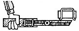

Here's some travel lore for backpackers, cycle tourers, globetrotters, or anyone else interested in a convenient, lightweight toothbrush case. Philomath, Oregonian Julie Summers devised her own travel container from a discarded 35mm film canister (available - usually free - from any photographer). She merely cut a slot in the container's lid to accommodate the brush's handle, then punched a few holes in the plastic body to aid ventilation. Finally, she attached a cord to both the toothbrush and the bottom of the canister. This "retainer" keeps case, lid, and protected brush together.
For those readers who are interested in baking their own fresh bread, but who can't spare an entire afternoon to do so, Susie Fisher of Dolores, Colorado has an idea that could mean the difference between having a homemade loaf and settling for store-bought.
Next time, she suggests, use a little less flour than the recipe calls for, mix the dough well, and just pour it directly into the baking pan. The nonkneaded loaves may look a little lumpy, but - according to Susie - they'll always taste great.
"Because we live in an area that experiences floods, power shortages, and earth tremors, my wife decided that we should all know how to locate and shut off the water supply, gas pipes, and so on in the event of an emergency," writes Dean June. So the Attica, New Yorkers conspicuously posted - in their basement - a master list of all such actions that might have to be taken during a disaster. Then they made identification tags, from 3" X 5" cards, and strung them from each important valve, plug, or switch on their master list.
When the last cold winds of winter blow away and the ice and snow finally melt into springtime pools, you'll frequently see that your asphalt driveway is pitted with potholes. Well, Ansonia, Connecticut's George Feltovic has found an inexpensive way to patch those souvenirs of winter. He discovered that highway traffic crews often discard little piles of asphalt alongside the road at the end of their working day . . . and by breaking up the hardened heaps with an axe or crowbar, George can bring that surplus asphalt home and soften it over an outdoor blaze. (Place the material in a large pan, of course . . . and be sure not to set it on fire.) Soon it'll flow like brand new, says George, and do a beautiful job of filling your driveway's cavities.
A Chapel Hill, North Carolina resident has found a way to recycle old screens and help her garden grow. Elsa Lewis-Heise ties discarded window screens together in pairs to form A-frames . . . which she then "stands up" in her garden, by digging a furrow for the bases and tamping soil back firmly around them. The vines from her bean, cucumber, pea, and tomato plants now have a place to climb, and her cat has a choice of nice shady spots to rest in whenever she "helps" Elsa in the garden!
Many readers have contributed lore concerning that increasingly popular kitchen appliance, the blender. Here's a roundup of uses for the practical pulverizer:
John Fowler of Cross City, Florida and Jean Nies of Henderson, Nevada both recommend making your own powdered sugar by blending 1 tablespoon of cornstarch into 1 cup of granulated sugar at high speed.
John also processes his own whole wheat flour in the blender. One minute at high speed produces a grind fine enough for bread, he says.
A resident of Hanover, Massachusetts, Sally Spooner, makes her tomato sauce by spinning whole raw tomatoes - without peeling or quartering them - in the blender before she begins to cook.
Sally also uses her appliance to make bread (or cracker) crumbs. She spins the dried food till it's fine, then puts the crumbs through a flour sifter to isolate any unground lumps and pours those chunks back into the blender for another whirl.
Katy Smith's blender helps her prepare acorn meal for bread and pancake recipes. The Quincy, Californian first cracks the outer shell of the nuts by giving them a small stomp . . . then uses a paring knife to remove the meat from the shell. She next puts 1 cup of clean, white acorns into the blender and adds water to the 2-cup mark. Katy spins this wet mixture for 30 seconds, adds 2-1/2 more cups of water, and whirls the flour-to-be again for 10 seconds. After letting the "slush" settle for five hours, she pours off the darkened water, being careful not to disturb the acorn sediment. Then another 2-1/2 cups of water and another 10-second spin . . . and Ms. Smith lets the mixture stand for at least six hours. After that, she pours off the water, fills the blender once more, and spins it for the final 10 seconds. This "mush" gets a last rest period of 6 to 10 hours before it's drained. When the water is poured off, there's about 1 cup of thickened acorn meal. The "wild flour" can be dried out . . . but Katy uses it wet and simply compensates for the extra moisture when cooking.
Finally, here's a quick and nutritious sandwich recipe contributed by E. Steve Montgomery of Grand Prairie, Texas: Place 2 medium, extra-ripe bananas ... 2 medium, sliced nectarines .. . 1/4 cup milk ... and 1/3 cup of peanut butter in a blender. Whirl the mixture at high speed for 30 to 45 seconds, or until it's smooth. Place the spread between two slices of your favorite bread . . . or eat it straight from a cup, topped with alfalfa sprouts. (Steve says that children especially favor this treat.)
"When your youngsters outgrow their clothing, don't sell all the wearables at rummage sales," writes Vickie Lunsford of Fruits, Colorado. "Save special garments, such as birthday dresses, favorite shirts, gifts from Grandma, etc .... and label each item with your child's name and the occasion for which it was purchased or worn.
"In a few years you can piece together beautiful and memorable quilts that will enable each of your children to remember what he or she wore for an important birthday . . . or on the first day of school.
"And - as an added touch - you can appliqué an entire baby outfit (it can even be puffed slightly with stuffing) in the center of your scrapbook quilt."
"In our area, the cost of buying 'critter' grain can be reduced by as much as 50% if the feed is purchased in bulk form," writes John Barkemeyer of Helena, Montana. "Of course, the small farmer or homesteader needs a convenient and inexpensive way to store bulk feed - without incurring the cost of a conventional steel bin - in order to realize substantial savings.
"Well, I found that the grain tank from an old combine is excellent for such a purpose . . . especially if you can find one from the real oldtime machines that employed gravity and a grain chute instead of the modern auger.
"Set some poles in the ground and suspend the tank, within these posts, at a height that will allow you to place a bucket under the chute. You'll need to build a moisture-tight cover for the tank ... but, once you've done so, you'll have a very handy bulk grain system that can hold in excess of 1,000 pounds of feed . . . all for a nominal investment."
A Duluth, Minnesota woman has discovered an easy way to keep hornets, bees, and bothersome wasps from attending her family's picnics. Mrs. Robert Spicer packs a bottle of non aerosol hair spray along with the other outing supplies. One small squirt stops them in their tracks, she writes. "Sure takes the sting out of outdoor activities."
Spring is welcomed with open arms by most folks, but it does mean a few extra duties to perform . . . such as getting the tractor-mower out and preparing it for another long grass-cutting season. However, sharpening his machine's cutting blades didn't prove to be as much work for Lester E. Norenburg as did removing them from his mower in the first place.
So the resident of De Funiak Springs, Florida devised a little gadget to help him do the job. First, he cut two 8-1/2" pieces of No. 9 wire and formed them into "U" shapes that measured about 3-1/2" across oust wide enough to fit over the flat side of his mower blade). Next, Les located a 36" length of 1 X 4 and drilled two pairs of holes to accept the wires: the first pair 1 inch from the end of the board, and the other 6 inches from the same end. Then he pushed the wires through the holes and bent back the "legs" so that only a half-inch space remained between the board and the inside curve of each U-shaped wire.
Now, Les can simply slip the loops over his mower blade, and the attached board provides the necessary leverage to keep the cutter still while he loosens the holding nut.
OK. Now it's YOUR turn! We've all come up with some practical, down-home, time-tested solutions to the frustrating little problems that bug us every day. Let's hear YOUR best "horse sense" ideas so we can share 'em and all benefit.
Send your pointers to Down-Home Country Lore, P.O. Box 70, Hendersonville, North Carolina 28791, and I'll make sure that the most useful of the suggestions will appear in upcoming editions. A one-year subscription - or a one-year extension of an existing subscription - will then be sent to each contributor whose tip does flat printed in this column.- MOTHER.
|
|
|
 |